Disassembling the Console
This part of the guide to Wii mini heaven is common to all mods that you can do and must be obligatorily followed before you begin. Make sure you have read info first and that you have the following tools:
- A Phillips #0 screwdriver
- A pair of tweezers
- Plastic opener
1. Open the case
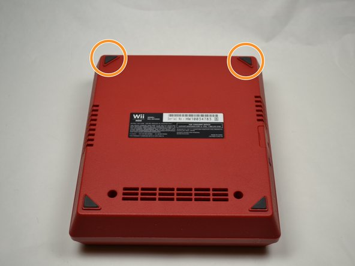 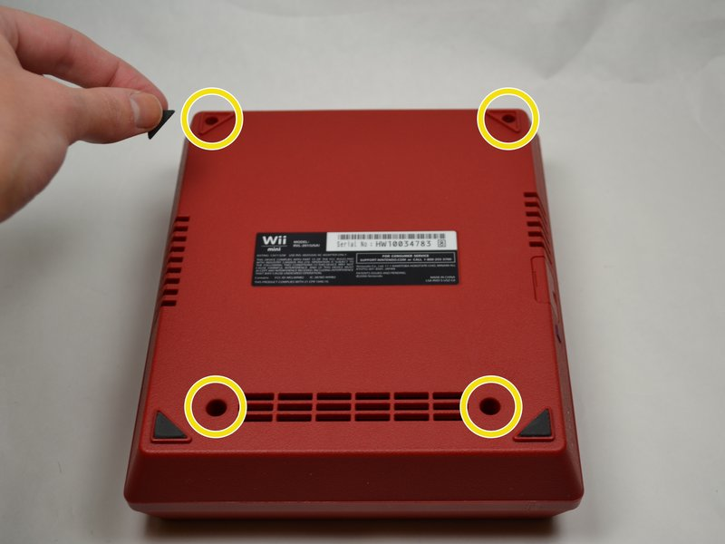
Turn the Wii mini upside down such that the word "Wii" on the bottom is rightside up. Remove the feet as labeled in the diagram, and remove the 4 screws, 2 of which were concealed by feet.
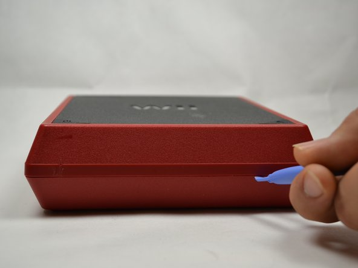 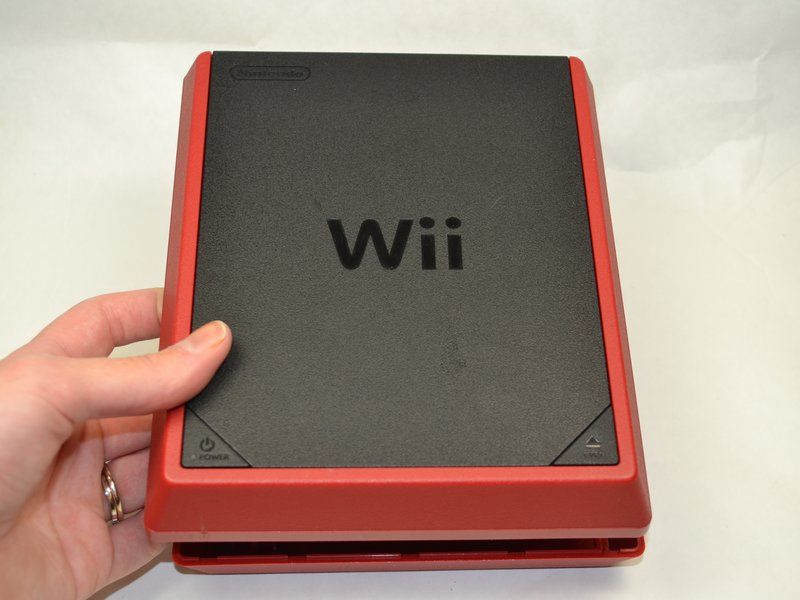Turn the console rightside up again, and use a plastic opening tool to separate the upper case from the lower case. Once it has been sufficiently separated, use your hand to remove the upper case. This should not require much force; when in doubt, more plastic tool.
Your console should now look like this:
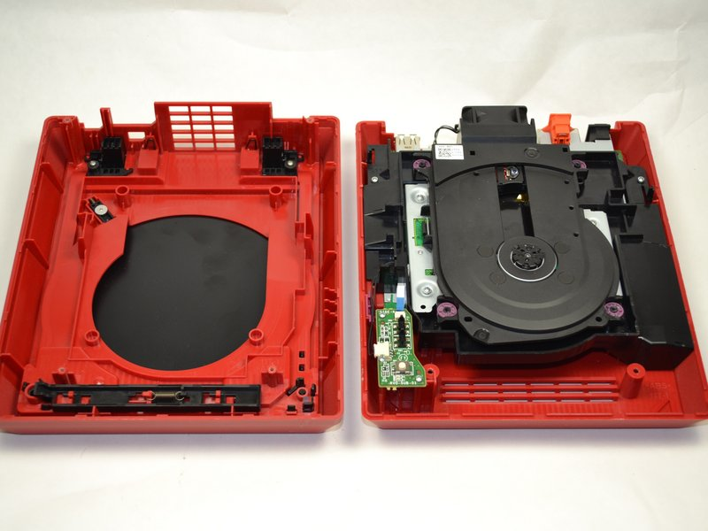2. Remove the fan
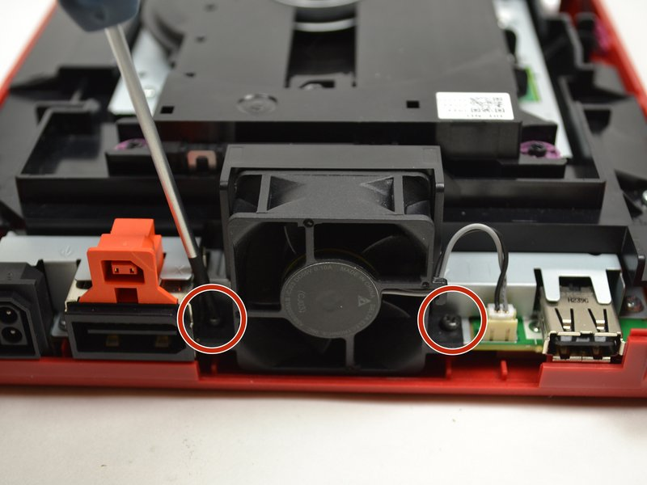 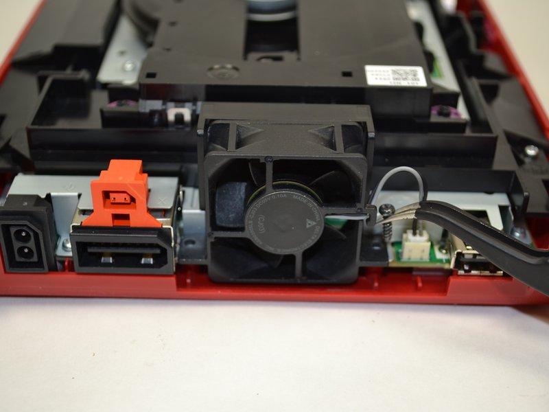
Rotate the Wii mini 180o laterally so that the fan is facing you. Remove the screws shown above, using tweezers if the screwdriver does not fully pull them out.
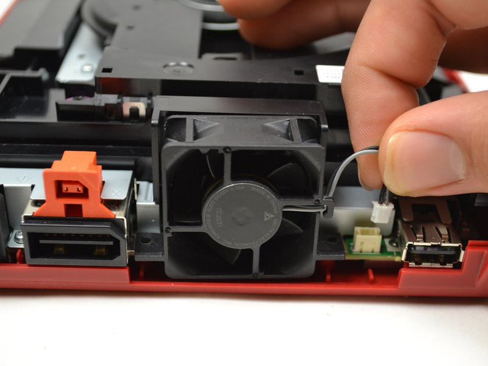Gently pull the pin connector shown above to fully remove the fan.
3. Remove the power board
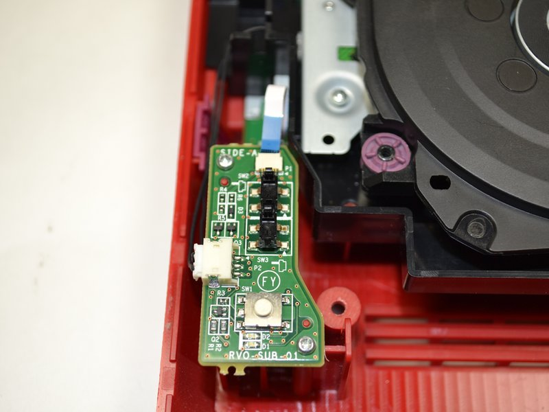 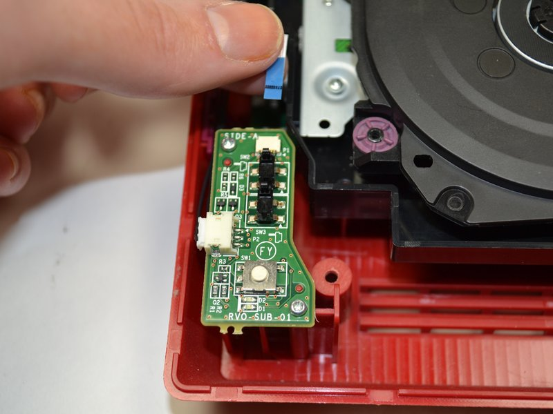
Turning the Wii mini back to its original orientation, slide the blue ribbon found on the left.
⚠️ We advise against fiddling with the power board ribbon cable as much as possible as it is rather fragile and trust me, you really don't want that to break.
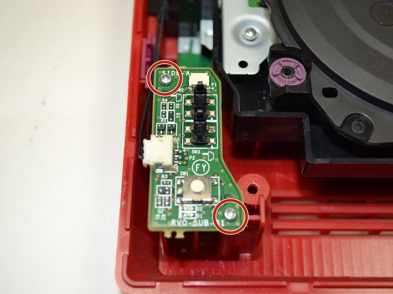 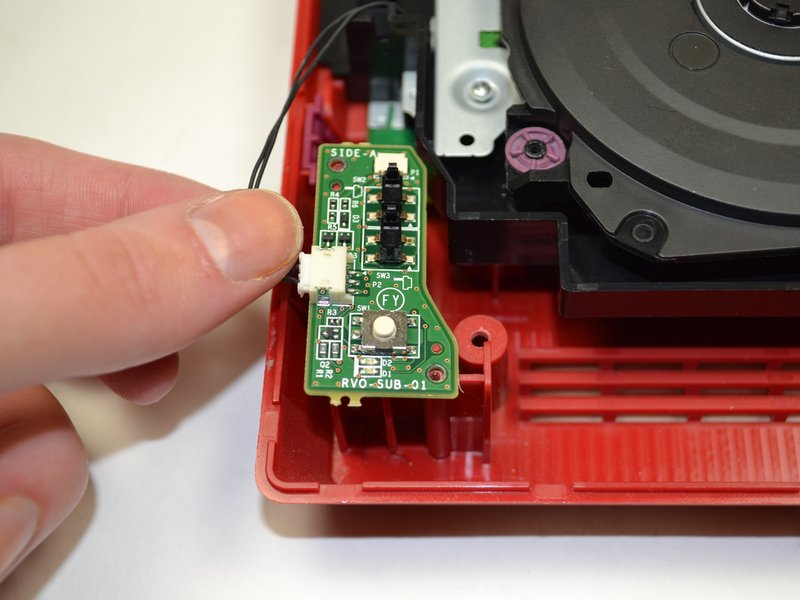Unscrew the two screws marked in the diagram above, then gently pull the pin connector on the left. The power board is now ready to be removed.
4. Remove the disc drive
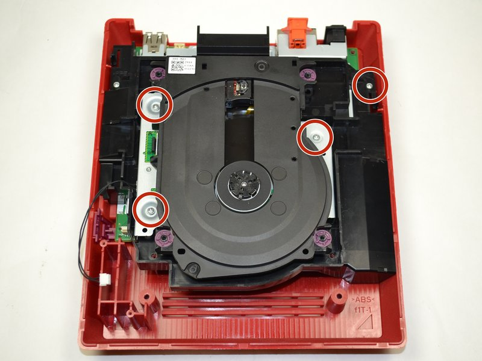 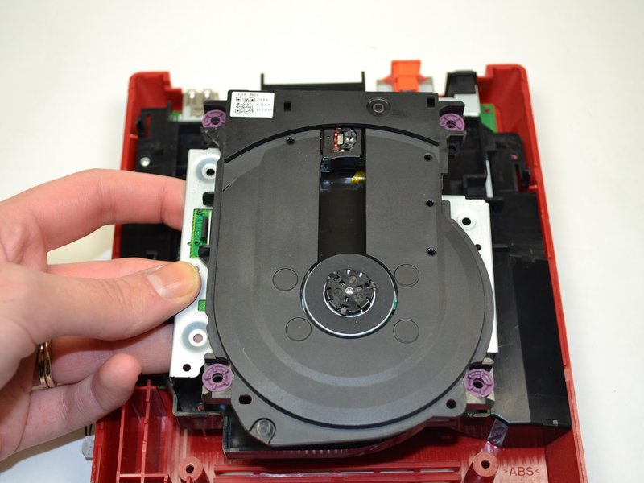
Unscrew the screws marked above, and then simply take the disc drive out.
5. Isolate the motherboard
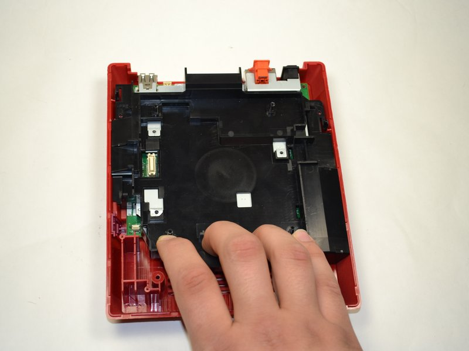 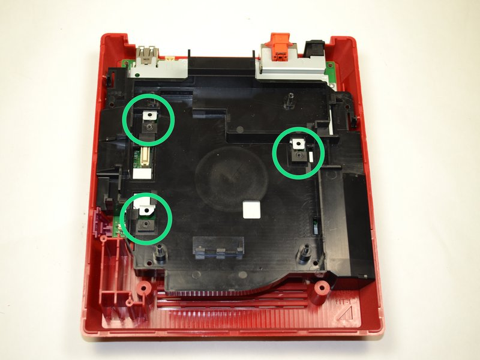
Gently pull the black tray toward you to loosen it. Before fully removing it, ensure that the black square pieces are separated from the metal square pieces.
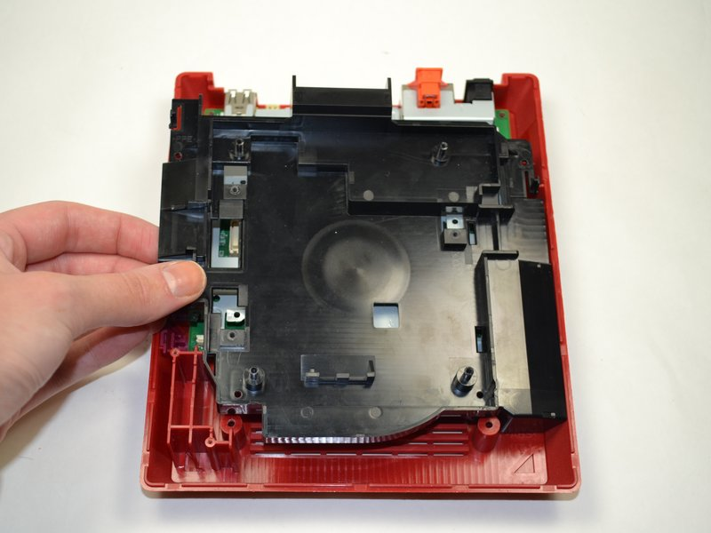 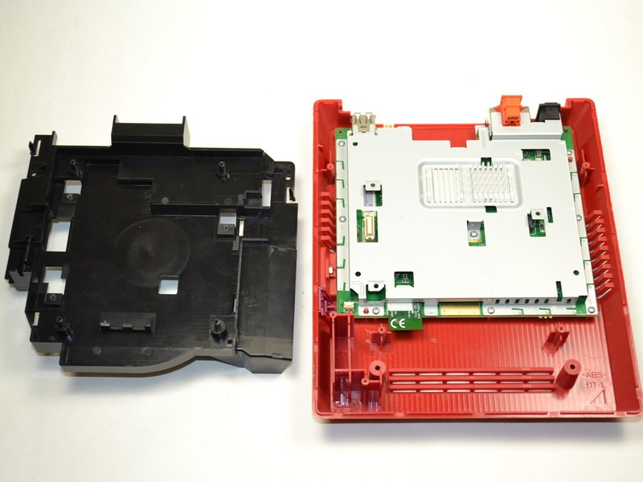Lift the black tray to remove it. Your Wii mini should now look like the image on the right.
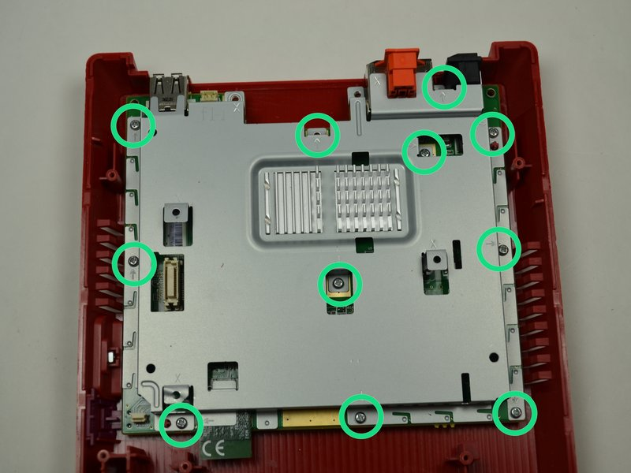 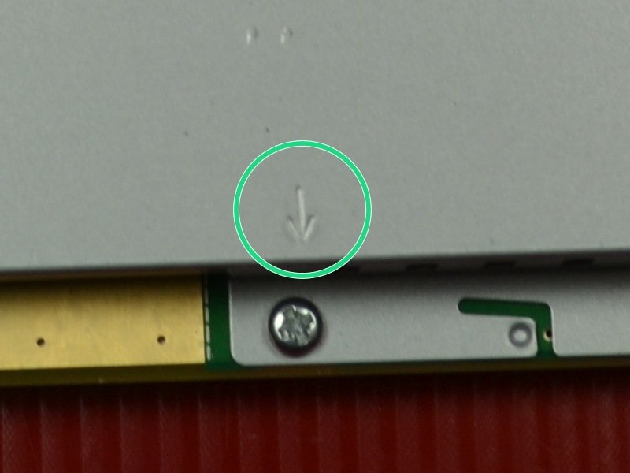Unscrew the marked screws, which also have arrows printed on the board next to them (see right image).
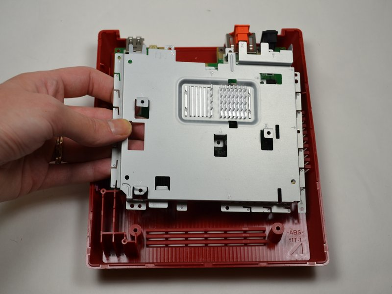 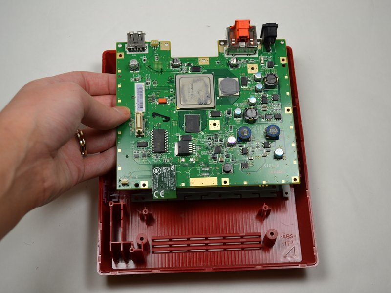Remove the metal tray, and the motherboard can be found underneath.
After taking apart the console
Make sure you are properly storing the rest of the parts and screws of the console somewhere organised and safe.
You are now ready to install mods! Continue to Choosing a Mod.